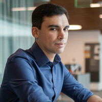

Ahmed Alaa is an Assistant Professor of Computational Precision Health at UC Berkeley and UCSF, with affiliations in EECS, Statistics, and the Biostatistics graduate group at UC Berkeley. He is a member of the Berkeley AI Research (BAIR) lab, the UC Berkeley Center for Targeted Machine Learning and Causal Inference (CTML), the UC Berkeley Center for Healthcare Marketplace Innovation (CHMI), and the UCSF Bakar Computational Health Sciences Institute. His lab develops generative AI models to inform clinical decision-making, along with the evaluation methods to measure their performance and real-world impact in healthcare. Before joining UC Berkeley and UCSF, Ahmed was a postdoctoral associate at MIT (CSAIL and IMES) and the Broad Institute of MIT and Harvard. He was previously a joint postdoctoral scholar at the University of Cambridge's Centre for AI in Medicine and UCLA. He earned his Ph.D. in Electrical and Computer Engineering from UCLA, where he also spent time as a visiting Ph.D. student at the University of Oxford and served as an honorary data scientist for Public Health England and the NHS. His awards include a 2026 Okawa Foundation research award, a 2025 Google Research Scholar Award, a 2024 Marcus Program Award in Precision Medicine, a 2024 Hellman Fellowship, and a 2021 Edward K. Rice Outstanding Doctoral Student Award from the UCLA Samueli School of Engineering.